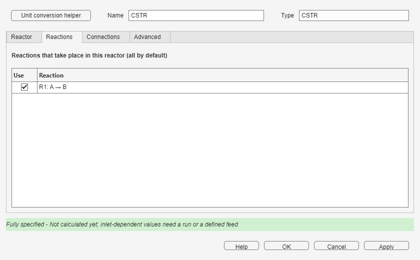
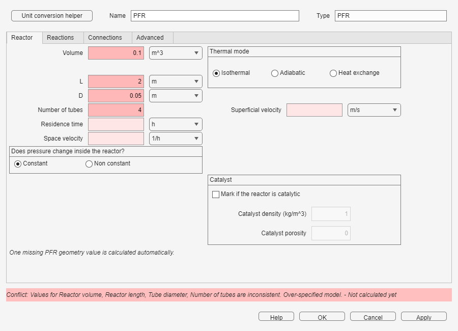
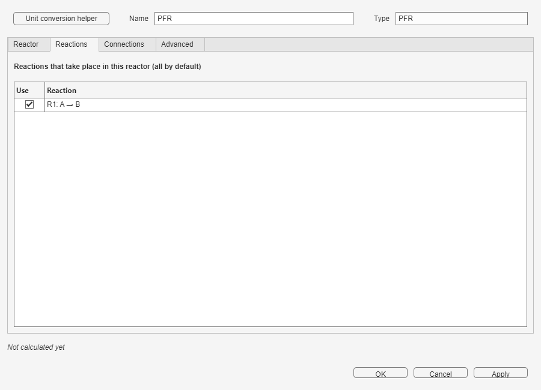
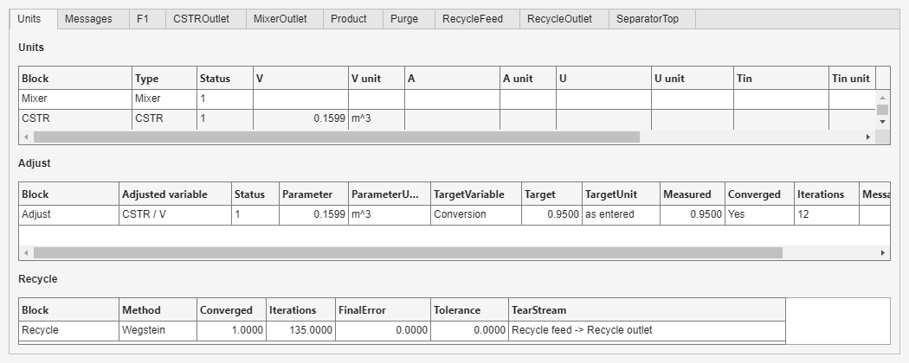
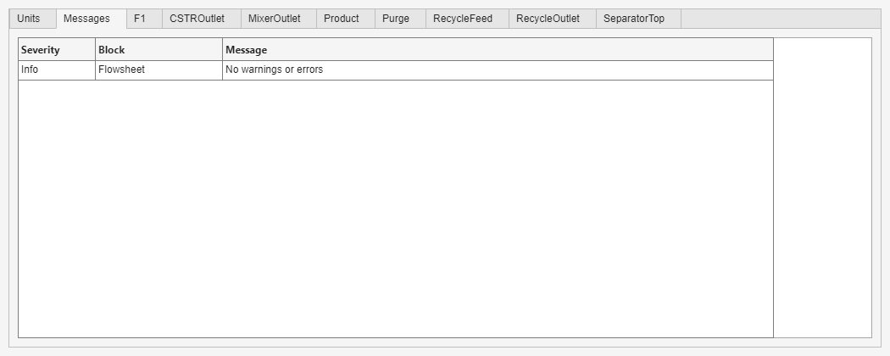

Build a basic chemical-process flowsheet in Simulink
Connect material streams, reactors, heat-transfer units, recycles, and design specifications in a Simulink diagram. Each named Stream carries flow, composition, temperature, pressure, phase, and solution status between the process blocks.
Creating a flowsheet
- In the main window, Non-Ideal Reactor Plus, press New flowsheet... in the Flowsheet (Simulink) group. The first time, a loading message appears while Simulink starts.
- Complete the Reactive System window and press Create flowsheet.... Choose a writable name and location for the new model.
- For a solved case, press Open example... in the same group, select the description you need, and press OK.
- Press Open block library in the same group. Drag blocks from the library into the model and double-click a block to edit it.

Reactive System
General
Set Number of components and Number of reactions. Enter component names and molecular weights, then fill the stoichiometric coefficients. Component order is shared by every stream and reaction, so keep it consistent.

Kinetics
Select a reaction and choose powerlaw, reversible, or expression. For power-law kinetics, enter k0, Ea, and one order per component. Reversible kinetics adds the reverse values and orders. Expression kinetics provides an editable rate-expression field. The concentration and time selectors determine the displayed units, while Rate equation previews the current selection.


The Ea check compares the forward and reverse activation-energy difference with the reaction enthalpy. Treat a warning as a sign or data-consistency check, not as a replacement for engineering judgment.
Thermodynamics
Enter constant or polynomial heat capacities, reaction enthalpies, and the reference temperature. Select Without thermodynamics only for a deliberately isothermal material-balance model. Adiabatic reactors, heat-exchange reactors, Heater/Cooler, and Jacket require thermodynamic data.

Run settings and help
The bottom row is available from every tab. Maximum iterations limits stationary iterations, including Recycle and Adjust convergence. Show results after run opens the results window after a successful run. Help opens this guide. When editing an existing model, Show results opens the latest results without rerunning.
In a block window, Apply checks and saves the visible specifications while leaving the window open, OK does the same and closes it, and Cancel discards changes. These buttons never calculate the whole flowsheet. Press Run in the model when you are ready to calculate it.
Specifications and degrees of freedom
Enter the independent information you know and leave the value that should be deduced empty. The window recalculates simple relations immediately after each edit. A value from a directly connected, defined Feed is used first; otherwise the latest successful Run is used. If neither is available, inlet-dependent results wait for a Run or a defined Feed.
| Appearance | Meaning | What to do |
|---|---|---|
| Pink, empty | A required user specification is missing. | Enter one independent value. |
| Dark blue text | You specified this value. | It is kept and takes priority during every Run. |
| Light gray, italic | The value was calculated from other entries. | Clear one of the blue entries if you want to specify this one instead. |
| Neutral gray | The value comes from a connection or needs an inlet from a Run or a defined Feed. | Define or connect the source; the tooltip explains what is needed. |
| Red | The specifications conflict, are out of range, or provide too many independent values. | Clear one of the implicated specifications before applying or running. |
The status line reports both specification closure and the latest simulation state. It distinguishes missing, complete, and conflicting specifications, then says whether the block has been calculated. Small values use significant digits, so a nonzero value is not hidden by fixed decimal places.

Specifications remain in force during Run, including while a recycle is converging. For example, if residence time is specified in a CSTR, its volume is recalculated from the changing inlet flow at every recycle iteration. To specify the total flow of an outlet, open that outlet Stream, enter the value in Specifications, and apply it; the producing Splitter or Separator then uses it.
Blocks
Place a named Stream between material-processing blocks. Scalar signals and the Jacket signal connect directly to their dedicated ports. Values entered in dialogs may use the displayed units.
Stream
A Feed has no material input and one output. Enter its phase, component flow or concentration, pressure, temperature, and volumetric flow. An intermediate Stream has one input and one output. A Product has one input and no output; after a successful run it displays calculated conditions and can report conversion using Reference feed and Key component.
| Variables | Relations used |
|---|---|
| Component and total molar flows, concentrations, mole fractions, mass flows and fractions when molecular weights are available, volumetric flow, temperature, and pressure | Component totals and fractions are consistent with the total flow; concentration and molar flow are linked by volumetric flow. Gas volumetric flow also follows temperature and pressure. |


CSTR
Connect Feed to Product. Specify Volume, choose the thermal mode, and enter catalyst data only when the reactor is catalytic. Isothermal uses the inlet temperature, Adiabatic sets heat exchange to zero, and Heat exchange requires a connected Jacket. The optional heat output reports duty.
| Variables | Relations used |
|---|---|
| Volume, residence time, space velocity, and inlet volumetric flow | Volume equals residence time multiplied by inlet volumetric flow; space velocity is the inverse of residence time. |
| Catalytic option: catalyst mass, density, and porosity | Catalyst mass follows occupied catalyst volume, density, and porosity. |

PFR
Connect Feed to Product. Define geometry by Volume or Length; one of volume, length, diameter, and number of tubes is calculated from the other three. Choose constant pressure or provide the extra fluid and particle data requested for pressure drop. Thermal modes, catalyst settings, reaction selection, Jacket connection, and heat output work as in the CSTR.
| Variables | Relations used |
|---|---|
| Volume, length, diameter, number of tubes, residence time, space velocity, superficial velocity, and inlet volumetric flow | Tube geometry determines volume; volume and inlet flow determine residence time; space velocity is its inverse; flow and tube area determine superficial velocity. |
| Catalytic and pressure-drop data when selected | Catalyst mass follows occupied catalyst volume. Non-constant pressure also uses the selected pressure-loss data. |


Jacket
Connect the Jacket output to a reactor in Heat exchange mode. Utility (U*A) uses the heat-transfer coefficient, area, and utility inlet temperature; utility outlet temperature, heat capacity, condensation, and latent heat are available when needed. The other modes are Specified reactor T and Specified Q. Area and utility inlet temperature may also come from scalar input ports.
| Variables | Relations used |
|---|---|
| Heat-transfer coefficient, area, their product, utility temperatures, heat capacity or latent heat, service flow, and reactor duty | The coefficient multiplied by area gives conductance. After a Run, duty and the utility temperature change or latent heat determine service flow. |
| Specified reactor temperature or specified duty | The selected mode needs one corresponding specification. |

Heater / Cooler
Connect Feed to Product. Enter any one of outlet temperature, temperature change, or duty; the energy balance calculates the others. Enter either pressure drop or outlet pressure. Positive duty heats the stream, and thermodynamic data are required.
| Variables | Relations used |
|---|---|
| Inlet and outlet temperature, temperature change, and duty | Temperature change links the two temperatures; the energy balance links outlet temperature and duty. |
| Inlet pressure, pressure drop, and outlet pressure | Outlet pressure equals inlet pressure minus pressure drop. |

Mixer
Connect two or more inlet Streams and one outlet Stream. Add inlet and Remove change the number of material inputs. The outlet follows the combined material and energy balance.
| Variables | Relations used |
|---|---|
| Outlet component flows, temperature, pressure, and volumetric flow | Known inlets determine the outlet by the material and energy balances; the Mixer needs no independent specification. |

Splitter
Connect one inlet Stream and two or more outlet Streams. Enter outlet fractions; one missing fraction is calculated automatically so the fractions sum to one. Every outlet retains the inlet state and composition.
| Variables | Relations used |
|---|---|
| One fraction and total molar flow for each outlet, plus inlet total molar flow | Fractions sum to one; each outlet flow equals its fraction multiplied by inlet flow. A Splitter with three outlets therefore needs two independent specifications. |

Separator
Connect one Feed, a Top Stream, and a Bottom Stream. Enter each component's Recovery to Top; the Bottom receives the remainder. This block is a component splitter, not an equilibrium flash.
| Variables | Relations used |
|---|---|
| Recovery, Top and Bottom component flows, and Top and Bottom mole fractions for each component | Recovery divides each inlet component between Top and Bottom; each outlet composition follows its component flows. One independent value is needed per component. |

Recycle
Connect the calculated tear Stream to Calculated and the return Stream to Estimate. Choose Direct or Wegstein, enter the relative tolerance, and choose an initial estimate. Wegstein also uses QMin, QMax, and Accelerate every N iterations.
| Variables | Checks used |
|---|---|
| Method, tolerance, initial estimate, and Wegstein limits and interval when selected | Tolerance must be positive, limits must be ordered, and the initial estimate must lie inside them. |

Adjust
Connect the measured Stream to the Adjust input and its Parameter (SI) output to a supported scalar port, such as reactor volume, feed temperature or flow, or Jacket area. Choose the target variable and value, parameter bounds, damping, tolerance, and strategy. Connect identifies an available downstream parameter port.
| Variables | Checks used |
|---|---|
| Measured target, target value, varied parameter, bounds, initial value, damping, tolerance, and strategy | Tolerance is positive, bounds are ordered, and the initial value lies within them. The connected parameter is varied during Run. |

Recycles and Adjust
A material recycle creates an algebraic loop. Insert one Recycle block at the tear Stream. Direct substitutes the calculated Stream on every iteration; Wegstein accelerates the update within its displayed bounds. Convergence requires the relative Stream error to remain below Tolerance.
When Adjust and Recycle share a model, Simultaneous updates both during the same iteration. Nested waits for every Recycle to converge before the next Adjust step. The solved example Separator recycle loop with adjusted CSTR volume demonstrates Nested operation.
An outlet-flow specification inside a recycle is applied when the loop converges for the first time; until then, the previous split is used to obtain a stable first solution. If the loop conserves total moles, specifying an absolute purge flow does not uniquely determine the purge fraction. Specify the outlet fractions in that case.
If a loop does not converge, inspect Recycle and Messages in Show results. Check topology and specifications before increasing Maximum iterations; then improve the initial estimate or try Wegstein with conservative bounds.
Guided example: three-outlet Splitter
- Place a Splitter, add a third outlet, and connect a named Stream to each outlet.
- Open the Splitter. Enter 0.2 for the first fraction and 0.3 for the second; leave the third empty. It is calculated as 0.5. Apply the change.
- Open the Stream on the first outlet. In Specifications, enter its total molar flow and apply. Reopen the Splitter: the corresponding fraction is now calculated from that flow and the known inlet flow.
- If the new outlet-flow specification conflicts with the two fraction specifications, clear one fraction. The status line must say that the Splitter is fully specified before Run.
- Press Run, then inspect the three Stream tabs in Show results. Their flows add up to the inlet flow.
Results
Use the model's Show results button or the same button in the Reactive System window. Units reports unit volumes, duties, Jacket data, and calculated values. The same tab contains the Adjust and Recycle convergence tables. Each named Stream has its own tab, and PFR profiles appears when axial profiles are available.

Messages collects errors, warnings, and topology diagnostics. After a run, block backgrounds are light green for solved, light yellow for warning, light red for error, and white when no result is available.

Examples
In the main window, press Open example... in the Flowsheet (Simulink) group. The selector lists these descriptions:
| No. | Description shown in the selector |
|---|---|
| 1 | Isothermal CSTR |
| 2 | Adiabatic CSTR and cooler |
| 3 | Adiabatic PFR |
| 4 | Parallel CSTRs (Problem 40b) |
| 5 | CSTR with recycle |
| 6 | Adjusted CSTR volume |
| 7 | Adiabatic CSTR comparison (Problem 44c) |
| 8 | Problem 37a - Two CSTRs in series with two feeds |
| 9 | Problem 40a - Two CSTRs in series |
| 10 | Problem 42 - CSTR then PFR |
| 11 | Problem 42 - PFR then CSTR |
| 12 | Problem 19 - Adiabatic gas PFR |
| 13 | Problem 21a - Isothermal PFR, adjusted feed T |
| 14 | Problem 21b - Adiabatic PFR, adjusted feed T |
| 15 | Problem 27 - Jacketed CSTR, adjusted feed T |
| 16 | Problem 30 - Mixer and adiabatic CSTR |
| 17 | Problem 31 - Mixer and cooled CSTR |
| 18 | Problem 44a - Adjusted PFR and CSTR volumes |
| 19 | Problem 45a - Three equal adjusted CSTRs |
| 20 | Problem 45b - Adiabatic CSTR, adjusted feed T |
| 21 | Problem 17 - Adiabatic PFR, adjusted volume |
| 22 | Problem 18 - Acetone cracking, adjusted PFR volume |
| 23 | Problem 23 - Butane isomerization, adjusted PFR volume |
| 24 | Problem 26 - Gas CSTR scale-up, adjusted volume |
| 25 | Problem 38 - Two parallel PFRs with one adjusted volume |
| 26 | Problem 40c - Isothermal PFR, adjusted volume |
| 27 | Problem 49a - Two equal adiabatic CSTRs |
| 28 | Problem 49b - One adiabatic CSTR, adjusted volume |
| 29 | Problem 34d - Jacketed Monsanto-reaction CSTR |
| 30 | Problem 33b - Cooled reversible gas CSTR |
| 31 | Problem 41 - Three CSTRs, adjusted feed flow |
| 32 | Problem 43 - PFR then CSTR, adjusted feed flow |
| 33 | Problem 43 - CSTR then PFR, adjusted feed flow |
| 34 | Problem 45c - Cooled tanks, adjusted areas |
| 35 | Problem 28 - Steam-jacketed CSTR |
| 36 | Problem 36 - Air-cooled CSTR, adjusted area |
| 37 | Problem 20b - Adiabatic reversible PFR, adjusted volume |
| 38 | Problem 29a - Isothermal CSTR, adjusted volume |
| 39 | Problem 29b - Cooled CSTR, adjusted area |
| 40 | Problem 32a - Three CSTR steady states (middle branch unstable) |
| 41 | Problem 48 - CSTR then adiabatic PFR, adjusted volumes |
| 42 | Problem 33d - CSTR area at maximum heat generation |
| 43 | Problem 15 - Isothermal gas PFR, number of tubes |
| 44 | Problem 22 - Adiabatic NO oxidation PFR volume |
| 45 | Problem 16 - Isothermal PFR space time and product flow |
| 46 | Problem 35 - Isothermal NO-reduction CSTR |
| 47 | Problem 35 - Adiabatic CSTR with adjusted feed temperature |
| 48 | PFR with recycle (R = 1, Levenspiel) |
| 49 | CSTR, separator and recycle with purge |
| 50 | Separator recycle loop with adjusted CSTR volume |

The examples are checked against textbook or analytical results. Open them from the selector, run them, and compare the reported quantities in Show results.
Troubleshooting
| Message or symptom | What to check |
|---|---|
| Stream is unconnected. | Connect the Stream to at least one process block. A Feed has a consumer, a Product has a producer, and an intermediate Stream has both. |
| Blocks are directly connected | Insert a named Stream between material-processing blocks. Direct scalar and Jacket signal connections are valid. |
| Unknown or missing feed | The Feed Stream name must match a feed defined in Reactive System. Reopen Reactive System and add or rename the feed. |
| Maximum iterations reached or did not converge | Read the Recycle and Adjust rows plus Messages, check specifications and tear placement, improve the initial estimate, then consider Wegstein or Nested and a larger iteration limit. |
| Thermodynamics-required error | Adiabatic, Heat exchange, Heater/Cooler, and Jacket calculations cannot run with Without thermodynamics. Supply heat capacities and reaction enthalpies or use a physically valid isothermal configuration. |